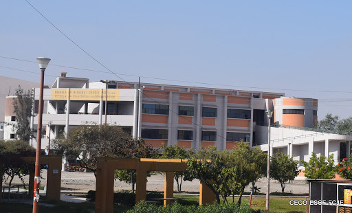

Galería Fotográfica
TODOS
Celebraciones
Posgrado
Pregrado
Personal Docente
{kind=link}
{kind=link}

{kind=link}

Fraternal Club es un equipo de trabajo integrado por estudiantes de la Escuela Profesional de Gestión Pública y Desarrollo Social de la Universidad Nacional de Moquegua, los cuales se encuentran orientados a desarrollar temáticas relacionadas a la Gestión Pública tomando como base los ideales de cada uno de sus integrantes pretendiendo ser un referente en el campo de la investigación.
La finalidad del proyecto resulta estar centrada en la elaboración del Trabajo Informe otorgado bajo el desarrollo del curso de Sistema Nacional de Planeamiento Estratégico, para el cual se ha estructurado y tomado en cuenta una serie criterios que contribuyen con el cumplimiento efectivo del objetivo vinculado al proyecto planteado.
El Objetivo del Proyecto esta referido a investigar y analizar las políticas en base a su articulación, principios, normas, reglamentos, documentos de gestión, planes, procesos, procedimientos y actividades relacionadas al Sistema Nacional de Planeamiento Estratégico.
El presente apartado presenta la información correspondiente a los datos de los integrantes y demás generalidades.
En base a la información analizada se presenta un resumen con criterios claves sobre el desarrollo del proyecto.
Presentación de análisis de acuerdo a los documentos publicados por la Universidad desde una perspectiva articulada.
Información relativa a la gestión institucional y los avances desarrollados bajo el precepto de logro de objetivos.
El presente apartado contiene información analizada de acuerdo al entorno social, político, ambiental y macroeconómico.
Presentación de evidencias, recomendaciones, conclusiones y demás criterios complementarios.
Presiona el botón de descarga para obtener el Informe actualizado del Análisis de la Planificación Estratégica de la Universidad Nacional Jorge Basadre Grohmann.
Años de Creación Institucional
Objetivos Estratégicos Institucionales
Acciones Estratégicas Institucionales
Indicadores de Medición
Garantizar el acceso a servicios de calidad que permitan el desarrollo pleno de las capacidades y derechos de la población, en condiciones equitativas y sostenibles.
Plan Estratégico de Desarrollo Nacional - El Perú hacia el 2021

Garantizar una oferta de educación superior y técnico productiva que cumpla con condiciones básicas de calidad.
Plan Estratégico Sectorial Multianual de Educación 2016-2021
Brindar formación profesional humanística, científica y tecnológica a los estudiantes universitarios con calidad y responsabilidad.
Plan Estratégico Institucional 2017 - 2022
Universidad Nacional Jorge Basadre Grohmann - Tacna
La Universidad Nacional de Tacna fue creada por Decreto Ley No. 18942 el 26 de agosto de 1971 como una imperiosa necesidad de esta heroica tierra de Caplina bajo el precepto de buscar formar profesionales para la explotación de los recursos naturales y su eventual transformación, así como para la promoción social y económica de la región sur del país. La Universidad Nacional de Tacna inició sus actividades académicas el 13 de mayo de 1972 con una Sesión Solemne de Apertura del Año Académico en el Salón de Sesiones del ex-Palacio Municipal, con la presencia de distinguidas personalidades civiles, militares, eclesiásticas, en la que destacamos a quien luego fuera el patrono de la Universidad, el Dr. Jorge Basadre Grohmann.
El histórico Local Centra, ubicado entre la Av. Bolognesi y la calle Pinto, cobijo a los primeros ingresantes y pasarían 27 años para que el 07 de noviembre de 1998 se transfiera definitivamente y a título gratuito este local a la Universidad. A partir del segundo semestre académico, a principios de octubre de 1972, la Universidad empezó a implementar su plana docente estable, por lo que los nuevos profesores, desde 1973 empezaron a asumir responsabilidades de gobierno en sus diversos niveles. El 20 de noviembre de 1979, el Consejo Nacional de la Universidad Peruana (CONUP) expidió la Resolución No. 8161-79-CONUP reconociendo en forma definitiva a la Universidad Nacional de Tacna y ordenando la constitución de sus Órganos de Gobierno.
El primer gobierno estuvo a cargo de la Comisión Organizadora y de Gobierno conformado por seis profesores representantes de las Universidades patrocinadoras conformaadas por la Universidad Mayor de San Marcos, la Universidad Nacional de Ingeniería y la Universidad Nacional Agraria La Molina. Así mismo, la Comisión Organizadora y de Gobierno tuvo un Presidente y dos Vice Presidentes, por lo que los otros miemmbros desempeñaron los cargos de Directores Universitarios. El 11 de julio de 1980, se expidió la Resolución No. 2058-80-UNTAC denominando a la institución como: "UNIVERSIDAD NACIONAL DE TACNA JORGE BASADRE GROHMANN" en reconocimiento al Dr. Jorge Basadre Grohmann por sus virtudes personales, a su consagración total a la causa del Perú, a su prolífica labor como historiador de la República, así como por sus virtudes como escritor, ensayista y como hijo ilustre de Tacna. Cuando se promulga la ley Universitaria No. 23733, el 09 de diciembre de 1983 por el Presidente de la República Arq. Fernando Belaúnde Terry, oficialmente tomó la denominación de: UNIVERSIDAD NACIONAL JORGE BASADRE GROHMANN".
Desde 1985 y al amparo de la ley Universitaria No. 23733 y luego de pasar por una primera etapa con Comisiones Organizadoreas y Gobierno y por una segunda etapa de Rectores Interinos, la Universidad Nacional Jorge Basadre Grohmann inició su tercera etapa de elección de sus Autoridades y Organos de Gobierno en forma democrática y en Asambleas Universitarias. Acorde a los postulados de su creación y en función de la modernidad que comenzó a darse en la Universidad Peruana, la Universidad Nacional Jorge Basadre Grohmann tiene establecida como misión: Formar profesionales, investigadores y post-graduados creativos, competentes y de excelencia, comprometidos en la solución de los problemas de la comunidad. Genera y desarrolla conocimientos científicos, tecnológicos y humanísticos, útiles para elaborar alternativas y soluciones integrales, que permitan engrandecer la cultura, promover la justicia, la equidad social y la igualdad de oportunidades en nuestro país.
La sociedad peruana espera de la Universidad, la formación de profesionales e investigadores con el nivel científico-humanístico y con capacidad crítica. Espera también sea capaz de entender la ciencia y generar la tecnología a fin de resolver los problemas de condición y de desarrollo de nuestro país. Ello lo hemos asumido con más entereza en la última década del siglo y hoy en los umbrales de un nuevo milenio buscamos la modernidad y la acreditación universitaria para constituirnos en una de las mejores universidades de nuestro país.
Estudiante del séptimo semestre de la Carrera Profesional de Gestión Pública y Desarrollo Social.
Universidad Nacional de Moquegua.

Estudiante del séptimo semestre de la Carrera Profesional de Gestión Pública y Desarrollo Social.
Universidad Nacional de Moquegua.
Estudiante del séptimo semestre de la Carrera Profesional de Gestión Pública y Desarrollo Social.
Universidad Nacional de Moquegua.
Estudiante del séptimo semestre de la Carrera Profesional de Gestión Pública y Desarrollo Social.
Universidad Nacional de Moquegua.
Estudiante del séptimo semestre de la Carrera Profesional de Gestión Pública y Desarrollo Social.
Universidad Nacional de Moquegua.
{kind=link}
{kind=link}
{kind=link}
{kind=link}